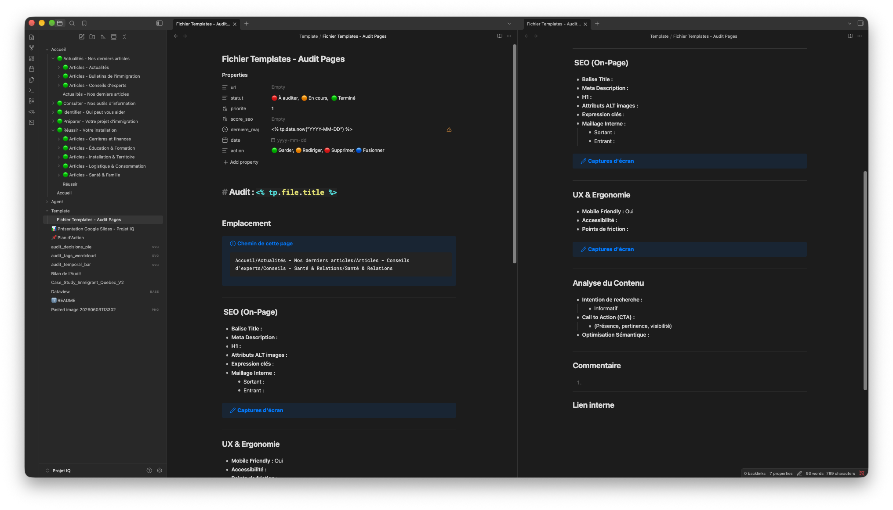
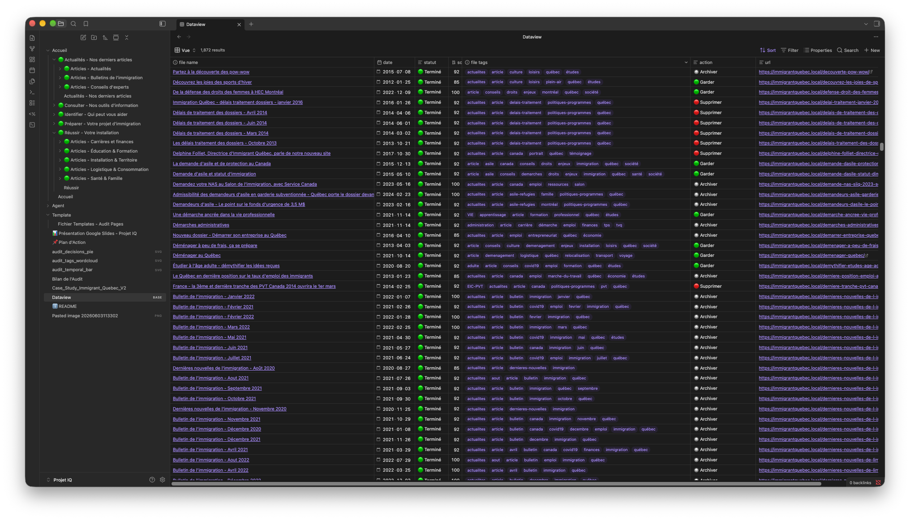
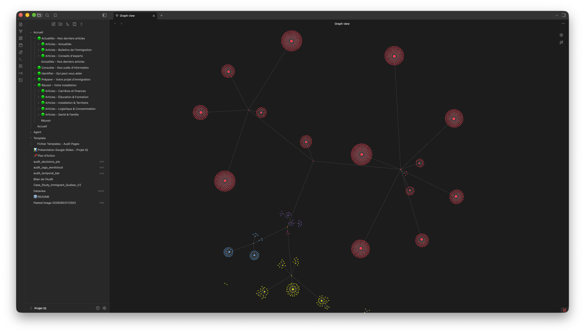
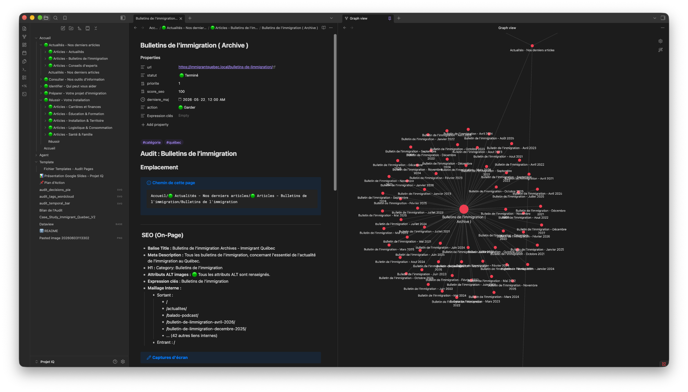

Audit stratégique de contenu
J'ai conduit l'audit complet du site immigrantquebec.com en vue de sa refonte. L'enjeu : évaluer l'intégralité des contenus du site, qualifier chaque page (conserver, archiver, fusionner, rediriger ou supprimer) et cartographier l'architecture d'information existante.
Ce projet représentait un terrain d'exploration nouveau, que j'ai abordé de manière curieuse et rigoureuse. J'ai premièrement déployé un serveur WordPress en local pour disposer d'un miroir technique du site.
Système de documentation sur mesure
J'ai conçu un environnement d'audit complet dans Obsidian, reposant sur le principe « 1 note = 1 page web ».
Template structuré
Chaque note suit un gabarit normalisé avec des propriétés frontmatter (statut, priorité, score SEO, date de dernière mise à jour, action à mener) et des sections d'analyse dédiées :
- Emplacement - Le fil d'Ariane de chaque page est reconstitué afin de situer précisément le contenu dans l'arborescence globale du site.
- SEO On-Page - Les principaux indicateurs de référencement sont passés en revue : balise title, meta description, H1, attributs ALT des images, expressions-clés ciblées et maillage interne, tant sortant qu'entrant.
- UX & Ergonomie - La compatibilité mobile, l'accessibilité et les éventuels points de friction sont évalués pour chaque page.
- Analyse du contenu - Le contenu est examiné sous l'angle de l'intention de recherche, de sa pertinence éditoriale et de la présence d'appels à l'action.

Vue tabulaire (Dataview)
Un tableau de bord centralise les +1 800 notes avec filtres et tri par nom, date, statut, priorité, mots-clés et URL, offrant une lecture instantanée de l'état global de l'audit.

Vue graphique
Les graphes Obsidian reconstituent visuellement l'arborescence thématique du site : chaque cluster de nœuds représente une rubrique (Actualités, Articles, Installation & Territoire, Emploi & Économie…), révélant les zones denses, les contenus orphelins et les connexions entre thématiques.


Automatisation progressive
Le projet a démarré par une analyse manuelle, page par page. Face au volume (1 800+ pages), j'ai itéré vers une automatisation croissante :
- Analyse manuelle : J'ai commencé par une immersion approfondie dans le site afin de comprendre sa logique éditoriale et sa structure existante.
- Script Python : Face à la répétitivité de certaines tâches, j'ai conçu un premier outil d'extraction de données en Python avec l'appui de l'IA.
- Pipeline IA : Pour aller plus loin, j'ai exploré le fonctionnement des agents IA notamment Antigravity de Google et mis en place, après plusieurs itérations, un pipeline d'automatisation complet qui a considérablement accéléré le traitement.
Impact
1 817 notes Obsidian couvrant l'intégralité du site, de 2012 à mars 2026.
Cette base documentaire a été pensée pour donner à mes responsables de projet une vision claire et actionnable lors de chaque point d'étape. Elle leur a permis de confirmer certaines hypothèses, d'en écarter d'autres et d'arbitrer les orientations stratégiques de la refonte en s'appuyant sur des données concrètes.